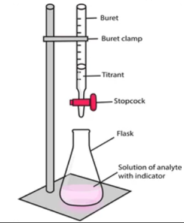
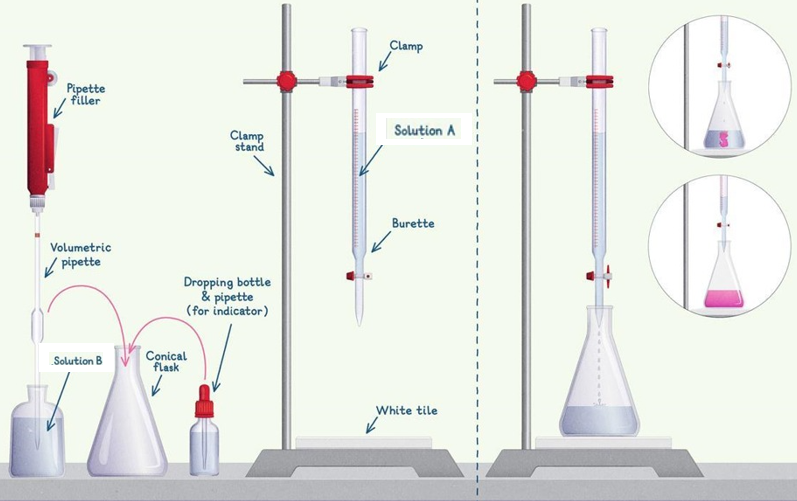

1. What Quantitative Analysis Means
Quantitative analysis is the branch of chemistry practical that determines the amount, concentration, mass or percentage composition of a substance. In WAEC Chemistry Practical, the most common quantitative analysis is titration.
Titration is a laboratory method used to find the concentration of a solution by reacting it with another solution of known concentration.

Titration Setup
Burette, pipette, conical flask, indicator and white tile are arranged to measure reacting volumes accurately.

Burette Reading
The burette reading must be read from the bottom of the meniscus at eye level and recorded to two decimal places.

Concordant Titres
Two or more close titre values are used to calculate the average titre. The rough titre is not averaged.
2. Apparatus and Their Functions
| Apparatus | Function | WAEC Accuracy Point |
|---|---|---|
| Burette | Delivers acid or alkali gradually during titration. | Read to 2 decimal places, e.g. 12.10 cm³. |
| Pipette | Measures a fixed volume, usually 20.0 cm³ or 25.0 cm³. | Rinse with the solution it will measure. |
| Conical flask | Holds the solution being titrated. | Can be rinsed with distilled water only. |
| White tile | Makes endpoint colour change clear. | Prevents overshooting the endpoint. |
| Indicator | Shows the endpoint by colour change. | Use 2–3 drops only. |
| Retort stand and clamp | Holds the burette vertically. | Burette must not be slanted. |
 Teacher guide: Label the burette, clamp, retort stand, acid A, conical flask, alkali B, white tile and indicator. The burette must stand vertically so the reading is accurate.
Teacher guide: Label the burette, clamp, retort stand, acid A, conical flask, alkali B, white tile and indicator. The burette must stand vertically so the reading is accurate.
3. Core Theory of Acid-Base Titration
In this WAEC model, A is dilute tetraoxosulphate(VI) acid, \(H_2SO_4\), and B is sodium hydroxide solution, \(NaOH\).
The mole ratio from the balanced equation is:
Useful Formulae
where \(n\) = number of moles, \(C\) = concentration in \(mol\,dm^{-3}\), and \(V\) = volume in \(dm^3\).
For \(H_2SO_4\) and \(NaOH\):
4. WAEC Titration Procedure
Aim
To determine the concentration of dilute \(H_2SO_4\) using a standard NaOH solution.
Procedure
- Rinse the burette with A and fill it with A.
- Remove air bubbles from the jet of the burette.
- Record the initial burette reading.
- Rinse the pipette with B.
- Pipette 25.0 cm³ of B into a conical flask.
- Add 2–3 drops of phenolphthalein.
- Place the conical flask on a white tile.
- Run A from the burette into B while swirling continuously.
- Near endpoint, add A drop by drop.
- Stop when the pink colour just disappears.
- Record the final burette reading.
- Repeat until concordant titres are obtained.
Teacher
Students, titration is not pouring acid into alkali. It is controlled addition. Your hand controls the burette tap, your other hand swirls the flask, and your eyes watch the colour.
Student
Sir, why do we add the acid dropwise near the endpoint?
Teacher
Because one extra drop can overshoot the endpoint and make your titre too high. WAEC rewards careful endpoint control.
Practical Reality
- If you stop too early, titre becomes too low.
- If you overshoot, titre becomes too high.
- If air bubble remains in the burette jet, titre becomes inaccurate.
- If the burette is not vertical, reading becomes unreliable.
5. Correct WAEC Titration Table
A good titration table must contain initial reading, final reading and volume used. Readings must be recorded to two decimal places.
| Titration | Rough | 1st | 2nd | 3rd |
|---|---|---|---|---|
| Final burette reading / cm³ | 12.40 | 12.15 | 12.10 | 12.15 |
| Initial burette reading / cm³ | 0.00 | 0.00 | 0.00 | 0.00 |
| Volume of A used / cm³ | 12.40 | 12.15 | 12.10 | 12.15 |
Teacher
The table itself carries marks. Even if your calculations are correct, a poor table can reduce your score.
How WAEC Sees the Table
- Correct headings attract marks.
- Correct units attract marks.
- Readings to two decimal places attract marks.
- Concordant titres attract marks.
- Correct average attracts marks.
6. Full WAEC Calculation Class
Given
- B contains \(4.0g\,dm^{-3}\) of NaOH.
- Volume of B pipetted = \(25.0cm^3\).
- Average volume of A used = \(12.13cm^3\).
- Equation: \(H_2SO_4 + 2NaOH \rightarrow Na_2SO_4 + 2H_2O\).
Step 1: Concentration of B
Step 2: Concentration of A
Step 3: Mass Concentration of A
Teacher
Students, never rush titration calculations. Start from the equation. The equation tells you the mole ratio.
Student
Sir, why did we divide by 2?
Teacher
Because 1 mole of \(H_2SO_4\) reacts with 2 moles of NaOH. Therefore the acid mole value is half the alkali mole value for the reacting amounts.
Industry Connection
Titration is used in water treatment, food industries, pharmaceutical quality control, fertilizer production, soap making and environmental monitoring.
7. Errors That Affect Titre Values
| Error | Effect | Reason |
|---|---|---|
| Overshooting endpoint | Titre too high | Too much acid added. |
| Stopping before endpoint | Titre too low | Neutralization incomplete. |
| Air bubble in burette jet | Titre unreliable/usually high | Part of burette volume fills air space first. |
| Burette rinsed with water only | Solution in burette diluted | Concentration changes. |
| Pipette not rinsed with B | B may be diluted | Measured moles of B reduce. |
| Parallax error | Wrong reading | Eye not level with meniscus. |
8. Part 1 Exam-Ready Summary
Quantitative Analysis
Determines amount or concentration of a substance.
Titration
A method for finding unknown concentration using a standard solution.
Phenolphthalein Endpoint
Pink to colourless when acid is added to alkali.
Mole Ratio
\(H_2SO_4:NaOH = 1:2\).
Concordant Titres
Close titre values used for averaging. Rough titre is ignored.
Accuracy Rule
Read burette at eye level and record to 2 decimal places.